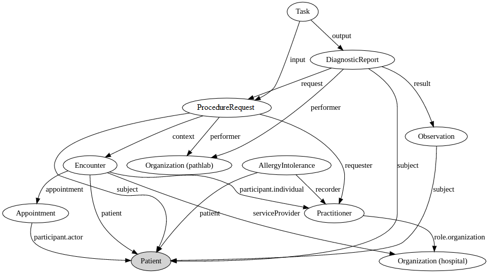

Sam's FHIR journey
This exercise will help you practice your FHIR skills by having you create resources that follow our Sam Fhirman's small journey through the healthcare system.
Contents
Step 1: Exersize description Step 2: Create a ValueSet Step 3: Perform an $expand on your ValueSet Step 4: Create a ConceptMap mapping Step 5: Perform a $translate on your ConceptMapStep 1: Exersize description
Sam, our Patient with a known allergy (AllergyIntolerance) has a regular Appointment at a hospital (Organization) which results in an Encounter when he goes in. The doctor (Practitioner), who previously recorded Sams allergy, examines Sam and notices [ANGUS FILL IN HERE], so he orders a test to be done (DiagnosticRequest) at the path lab (Organization). The hospitals system tracks this request using a Task, so the doctor can check the task at any time to see if there's been any progress made. When the path lab performs its analysis, it records [ANGUS FILL IN HERE] as an Observation in its DiagnosticReport and sends that off back to the hospital. The hospitals system updates the Task with the DiagnosticReport and notifies the doctor that results are available.
We need you to model this scenario as FHIR resources. You will need to create a Patient, AllergyIntolerance, Appointment, Encounter, Practitioner, DiagnosticRequest, Task, DiagnosticReport, Observation, and two Organization resources and have them reference each other appropriately. Try working as a group to split the load, or just through the resources one by one together!
See diagram below for how the resources could be setup:
{kind=link}
Exesize answer
The answer with all resources included is available here. As this is proper FHIR transaction bundle, you can also just POST it to a FHIR servers endpoint and have all of the resources created for you on the server!
Answer is also available for viewing below:
That's it for this exercise!